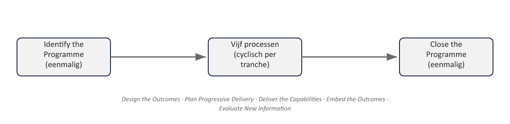

Een nieuw niveau, een nieuwe laag
⏱ 3 minNiveau 1 draaide om één project: de herstart van WGP 2.0. Niveau 2 verlegt de casus: WGP 2.0 staat niet langer op zichzelf, maar is één van vijf gecoördineerde initiatieven binnen het Programma Mutatieplatform — een programma dat de hele mutatieketen bij Meridiaan moderniseert, met als doel de doorlooptijd van werkgeversmutaties te halveren. Dat doel kan geen van de vijf projecten alleen realiseren; het ontstaat pas uit hun samenhang. Precies dát is, zoals in deel 1 (§4) al werd geïntroduceerd, het onderscheid tussen een project en een programma.
Dit deel introduceert MSP (Managing Successful Programmes, 5e editie), de methode die niveau 2 structureert — opgebouwd volgens hetzelfde patroon als PRINCE2: principes (niet-onderhandelbaar), themes (governance-onderwerpen, vergelijkbaar met PRINCE2’s practices) en processen (de levenscyclus). Wie PRINCE2 uit niveau 1 kent, herkent de architectuur onmiddellijk — de inhoud is anders, de vorm is vertrouwd.

Uit Werkboek deel 11, Opdracht 11.1 — Programma of geen programma? (individueel, 10 min)